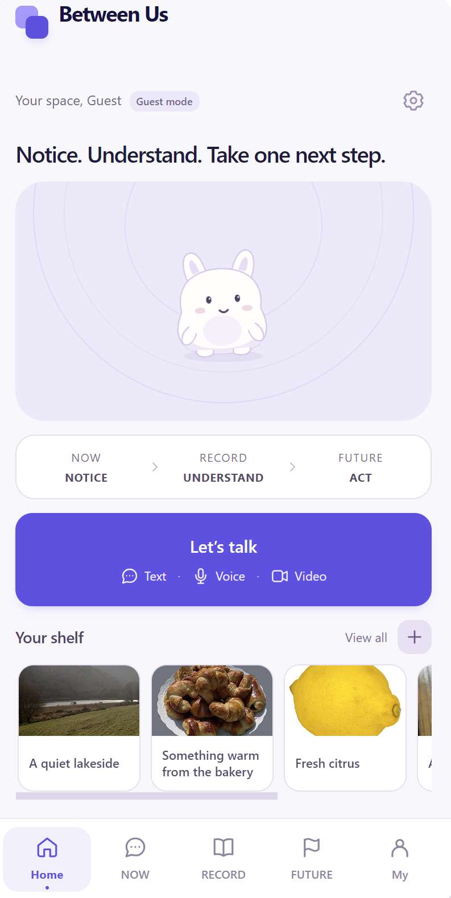

01 / TEXT
Put it into words.
Describe your situation, explore what you’re feeling, and choose a manageable next step.
YOUR CONTEXT · YOUR PACEYOUR EVERYDAY AI COMPANION
It can be hard to notice emotional changes
while you’re living through them.

A strategy that
helped me calm down.
NOW
Start with text, voice or video, at your own pace.
Interactive example · sample responses · nothing is sent
↶ Bring each new reflection back to your RECORD.
MORE THAN A TEXT BOX
Choose how you want to check in. Start with one way, and add more context when it feels useful.
01 / TEXT
Describe your situation, explore what you’re feeling, and choose a manageable next step.
YOUR CONTEXT · YOUR PACE02 / VOICE
Use a voice check-in when speaking feels easier than typing. Add the context you want to share.
VOICE CHECK-IN · OPTIONAL03 / FACE & VIDEO
Choose a short video if you want to add visual context alongside your words. Text remains a complete starting point.
CAMERA BY CHOICE · OPTIONALYour chosen inputs → your situation and selected memories → a next step that fits.
A FEW THINGS YOU MIGHT WONDER
Small questions. Clear answers.
An AI-supported companion for everyday emotional wellbeing. NOW helps you talk through what you feel, RECORD keeps selected experiences, and FUTURE helps you plan and rehearse for an upcoming situation.
Save a moment and the next step you choose in NOW. Revisit it in RECORD to add what happened and what helped. Then bring a relevant saved moment into FUTURE to prepare for a new challenge.
Yes. You can start with text. Voice and video are optional ways to add context, and microphone or camera access begins only when you choose to use them in the app.
Click NOW, RECORD or FUTURE, then use the controls inside the phone. Try a sample message, save it to RECORD, edit your reflection and bring it into FUTURE. These interactions use local example responses; Try Between Us opens the separate app.
The product journey is built around selected saved moments: the situation, your chosen action and a later reflection. You choose which past experiences to bring into a new plan.
Between Us focuses on everyday support, reflection and preparation. It does not provide a clinical diagnosis or replace professional assessment or treatment.
WHO WE ARE
We bring user research, product design and technical prototyping together.
Our shared focus: thoughtful AI support for everyday emotional wellbeing.
YOUR NEXT SMALL STEP
Start with one check-in. Continue at your own pace.
Try Between Us →WE'D LOVE TO HEAR FROM YOU
Tried Between Us? Have an idea, a glitch, or just a thought? Scan the QR code or open the survey below — it takes under a minute. We're genuinely looking forward to hearing from you ♡
Open the feedback survey →